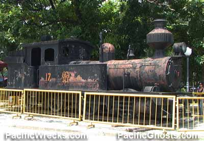
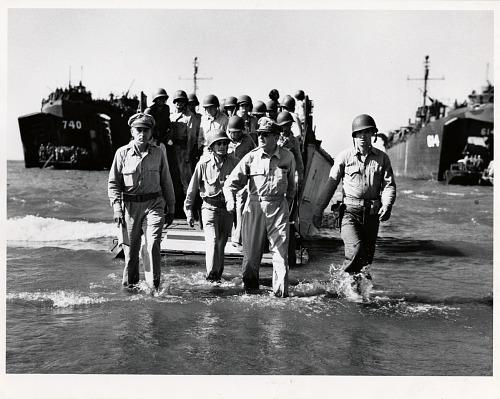

The Dagupan City Museum is a local heritage institution located in the heart of Dagupan City, Pangasinan, Philippines. It preserves and presents the city’s cultural identity through artifacts, artworks, and historical exhibits chronicling Dagupan’s evolution from a coastal trading hub to a modern urban center.
The Dagupan City Museum sits across from the city hall and plaza in a building that once housed municipal offices. Repurposed to showcase the city’s history, it offers an accessible space for residents and visitors to explore Dagupan’s past. Its central location connects it to other local landmarks, including the old railroad station and St. John the Evangelist Cathedral.
The building itself keeps its original architectural charm, blending civic history with cultural preservation. The museum tells the story of Dagupan’s growth through carefully curated exhibits that highlight both everyday life and major historical events.

Inside, the museum displays antique household items, traditional clothing, and family photographs, giving visitors a glimpse of Dagupan’s cultural heritage. Highlights include World War II relics like helmets, documents, and photos of General Douglas MacArthur’s 1945 visit.
Art also takes center stage, with works inspired by National Artists Victorio Edades and Salvador Bernal. Outside, Railroad Locomotive No. 17 commemorates Dagupan’s rail history, linking the city’s past with its present.


The museum doubles as a civic and educational space, hosting school visits, cultural workshops, and community events. It helps residents connect with Dagupan’s artistic and wartime heritage in an engaging, hands-on way.
Despite its modest size, the Dagupan City Museum’s impact is outsized. It acts as a bridge between generations, connecting contemporary audiences with stories, traditions, and achievements of Dagupan’s past. Its presence underscores the importance of preserving history not just in textbooks, but in accessible, tangible spaces where residents and visitors alike can experience the city’s narrative firsthand.
